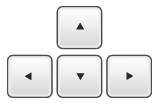

Usage instructions
- ZoomBoard keyboard:
- Tap/Click once on a key and the keyboard will enlarge the tapped area. Tap/Click again on the desired key to enter the character.
- Callout keyboard:
- Press/Click a key and a callout will inform you about the character that will be entered. Release the key to enter the character.
- ZShift keyboard:
- Press/Click a key and a zoomed callout will inform you about the character that will be entered. Release the key to enter the character.
Common shortcuts

- Swipe Up over the keyboard or Press the Up arrow key
- to change soft keyboard forward.
- Swipe Down over the keyboard or Press the Down arrow key
- to change soft keyboard backward.
- Swipe Right over the keyboard or Press the Right arrow key
- to enter a space.
- Swipe Left over the keyboard or Press the Left arrow key
- to delete previous character.
- Tap/Click on the upper part of the screen or Press the Enter key
- to submit the entered text. Actually nothing gets submitted... it's just a demo.